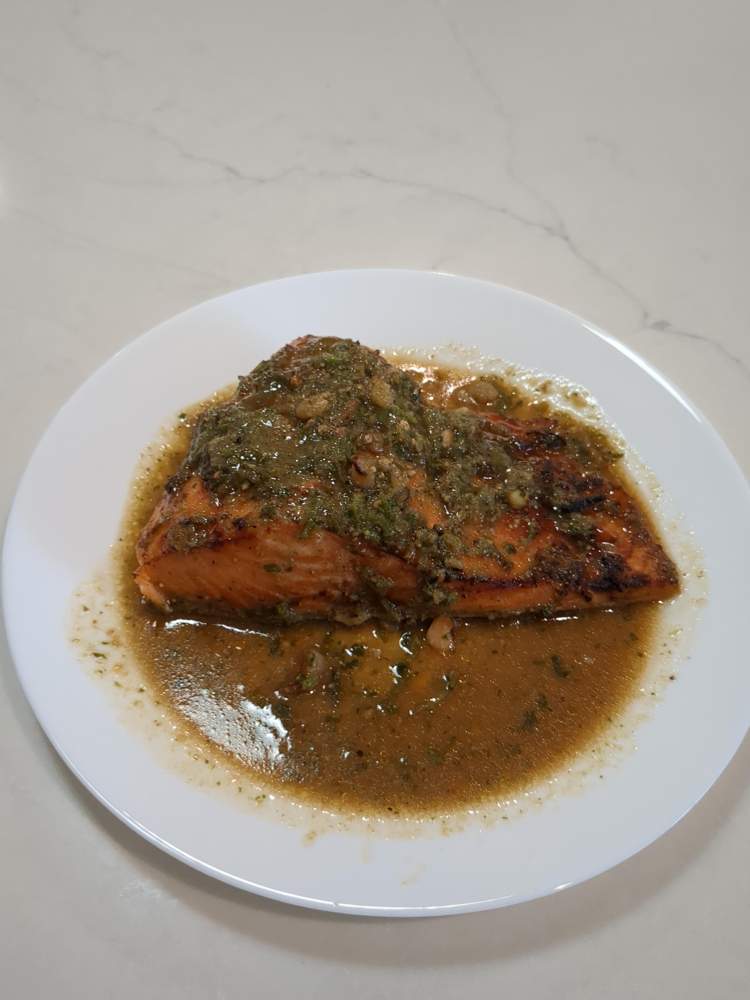

Air Fryer Three Buddy Salmon

Ingredients
- 400 g salmon filet
- 4 garlic cloves
- 30 g cilantro stems
- 3 bird's eye chilis
- 1½ tsp white pepper corns
- 1 tbs Seasoning soy sauce
- 1 tbs fish sauce
- 1 tbs oyster sauce
- 1½ tsp sugar
- 1 tsp Mirin
- 1 tbs Avocado oil
- 2 tsp lime juice (optional)
Directions
- Make Marinade: Mix soy sauce, oyster sauce, fish sauce, sugar, Mirin, oil, and lime juice.
- Add Aromatics: Crush peppercorns, garlic, cilantro, and chilis into a coarse paste; stir into marinade.
- Marinate Salmon: Place salmon in a bowl and coat thoroughly with marinade while the air fryer heats.
- Preheat Air Fryer: Heat air fryer to 425°F on Air Crisp with the baking vessel inside so it gets fully hot.
- Cook: Place salmon in the preheated vessel (it should sizzle). Spoon remaining marinade over the top and cook for 7 minutes.
- Serve: Transfer to a serving dish and garnish with cilantro leaves and finely chopped bird's eye chili
Chef's Notes
- The thinner edges should turn dark brown after about 7 minutes, mostly due to the sugar. The sweetness balances the salty, savory sauces.
- Butterfly thicker fillets if you want more browned edges.
- A teaspoon of maple syrup is an excellent optional addition.
- Total time from start to finish is about 15-20 minutes.
Michael Fritsche
mbf@fritsche.org